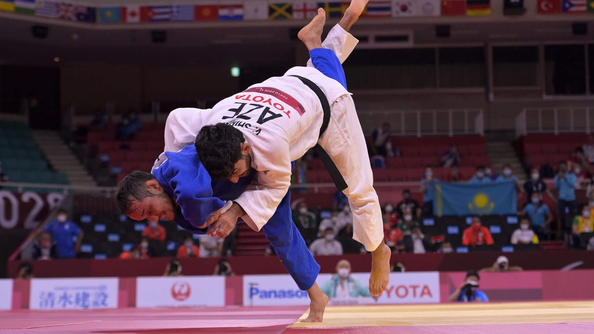
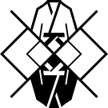

Judo +100kg - hommes

L'épreuve des plus de 100 kg hommes en judo s'est déroulée le 02/08/2024 à l'Arena Champ-de-Mars Arena, à Paris, en France. Elle est remportée par le français Teddy Riner.
Déroulement de l’épreuve
Du premier tour jusqu’aux quarts de finale, les 24 judokas sont séparés en 4 groupes, les groupes A, B, C et D. Chaque groupe est composé de 6 judokas dont 4 qui se battent au premier tour et 2 qui les rejoignent lors du deuxième tour.
Les judokas qui perdent lors des quarts de finale se battent pour la médaille de bronze lors du repêchage avec les 2 demi-finalistes perdants. Au terme de ces combats, 2 judokas reçoivent la médaille de bronze.
Les 2 autres médailles sont attribuées aux combattants de la finale qui ont dû vaincre leur adversaire lors de leur précédent combat : la demi-finale.
Le gagnant de la finale reçoit la médaille d’or et le perdant reçoit la médaille d’argent.
